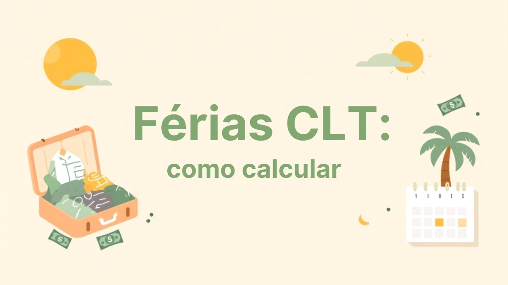

Férias CLT: como calcular o valor, o terço constitucional e quando você pode vender dias

Quase todo trabalhador CLT sabe que "tem direito a 30 dias de férias por ano". O que pouca gente sabe é que esse número não é automático — depende das faltas do período, que o valor pago inclui um terço a mais por lei, que dá para vender parte do descanso por dinheiro e que existe um prazo bem específico para o pagamento cair na conta.
Este guia explica cada uma dessas peças com base na Consolidação das Leis do Trabalho (CLT) e nas mudanças mais recentes na jurisprudência, para você calcular exatamente quanto vai receber e não perder nenhum prazo.
Quando você adquire o direito às férias
O direito às férias nasce a cada 12 meses trabalhados — o chamado período aquisitivo (art. 130 da CLT). Não se conta o ano civil (janeiro a dezembro), e sim o ano contratual: se você começou a trabalhar em 10 de março, seu período aquisitivo fecha todo 9 de março.
Depois de fechado o período aquisitivo, a empresa tem os 12 meses seguintes para conceder o descanso — é o período concessivo (art. 134). Ou seja, do início de um vínculo até o limite para tirar a primeira férias, podem se passar até 24 meses.
Têm direito às férias remuneradas os trabalhadores urbanos, rurais e domésticos com carteira assinada. MEI, autônomos e prestadores de serviço sem vínculo CLT não têm esse direito automático.
Quantos dias de férias você realmente tem
A maioria das pessoas imagina que são sempre 30 dias, mas a CLT reduz esse número conforme as faltas injustificadas ao longo do período aquisitivo. A tabela do artigo 130 é esta:
| Faltas injustificadas no período aquisitivo | Dias de férias |
|---|---|
| Até 5 faltas | 30 dias corridos |
| De 6 a 14 faltas | 24 dias corridos |
| De 15 a 23 faltas | 18 dias corridos |
| De 24 a 32 faltas | 12 dias corridos |
| Mais de 32 faltas | Perde o direito a férias naquele período |
Importante: a lei proíbe descontar as faltas diretamente dos dias de férias. O que existe é essa redução em faixas — atestados médicos, licenças e faltas justificadas não entram nessa conta.
Como calcular o valor: salário + o terço constitucional
O valor das férias tem duas partes:
- A remuneração normal referente aos dias de descanso — para quem tira os 30 dias, é um salário mensal completo;
- O terço constitucional — um adicional de 1/3 sobre esse valor, garantido pelo artigo 7º, inciso XVII, da Constituição Federal de 1988.
Fórmula prática: valor das férias = salário bruto + (salário bruto ÷ 3). Quem ganha R$ 3.000 e tira 30 dias de férias recebe R$ 3.000 + R$ 1.000 (o terço) = R$ 4.000 brutos, antes dos descontos de INSS e imposto de renda.
Assim como no 13º salário, quem recebe com frequência horas extras, adicional noturno ou comissões tem direito a incorporar a média desses valores ao cálculo das férias — vale conferir se o holerite reflete isso corretamente.
Abono pecuniário: como vender até 10 dias de férias
A CLT permite converter em dinheiro até 1/3 do período de férias — no máximo 10 dias — em vez de descansar. É o chamado abono pecuniário, e alguns pontos merecem atenção:
- A iniciativa precisa ser sua. A empresa não pode impor a venda das férias; o pedido parte do empregado;
- O prazo é de até 15 dias antes do fim do período aquisitivo — depois disso, a empresa não é obrigada a aceitar;
- O terço constitucional continua sendo calculado sobre os 30 dias inteiros, mesmo vendendo 10 e descansando só 20;
- Não há desconto de INSS nem de imposto de renda sobre o abono pecuniário, porque ele tem natureza indenizatória — diferente da remuneração normal das férias, que é tributada.
Calculadora: quanto você vai receber de férias
Informe seu salário bruto e quantos dias você quer vender de abono pecuniário (0 se for descansar os 30 dias inteiros) para ver o valor líquido, já com INSS e IR sobre a parte de descanso.
Calculadora de férias CLT
Estimativa com as tabelas de INSS e IR vigentes em 2026, assumindo período aquisitivo cheio (30 dias, sem faltas). Não considera dependentes nem outras deduções.
Cálculo educativo e aproximado: usa as faixas do INSS (Portaria Interministerial MPS/MF nº 13/2026) e a tabela do IR com a isenção até R$ 5.000 da Lei nº 15.270/2025, sobre a parte de descanso (o abono pecuniário é isento por natureza indenizatória). Não considera dependentes, pensão alimentícia, previdência privada nem reduções por faltas. Confirme o valor exato no holerite da sua empresa.
Dá para dividir as férias em mais de uma vez?
Sim, desde a reforma trabalhista de 2017 (Lei nº 13.467/2017, que alterou o art. 134, §1º da CLT). Com a concordância do empregado, as férias podem ser fracionadas em até três períodos, desde que:
- Um dos períodos tenha, no mínimo, 14 dias corridos;
- Os demais tenham, no mínimo, 5 dias corridos cada;
- Menores de 18 anos e maiores de 50 anos não podem ter as férias fracionadas — para esses grupos, o descanso precisa ser em período único.
Prazo de pagamento e o que acontece se a empresa atrasar
O artigo 145 da CLT determina que o pagamento das férias — remuneração, terço e abono pecuniário, se houver — deve estar na sua conta até 2 dias antes do início do descanso.
Aqui vale um esclarecimento recente e importante: por muito tempo, a Justiça do Trabalho aplicava a Súmula 450 do TST, que mandava pagar as férias em dobro sempre que esse prazo de 2 dias fosse descumprido. Em 2024, o Supremo Tribunal Federal (ADPF 501) declarou essa súmula inconstitucional, entendendo que a CLT não previu expressamente a dobra para o simples atraso no pagamento. Isso significa que, hoje, atraso no pagamento não gera mais dobra automática só por causa da Súmula 450.
Isso não elimina a dobra prevista em lei: se a empresa deixar de conceder as férias dentro do período concessivo (os 12 meses após o período aquisitivo se fechar), aí sim incide o pagamento em dobro, por força do artigo 137 da CLT — essa regra segue valendo normalmente. Ou seja, a diferença está entre "pagar atrasado" (não gera mais dobra automática) e "não conceder o descanso no prazo" (continua gerando dobra).
Férias na demissão: vencidas e proporcionais
Ao sair da empresa — seja por demissão, pedido de demissão ou fim de contrato —, você recebe na rescisão:
- Férias vencidas, se você já completou um período aquisitivo e ainda não tirou o descanso, sempre em dobro se o período concessivo já tiver se esgotado;
- Férias proporcionais, referentes aos meses trabalhados no período aquisitivo em curso, calculadas a 1/12 por mês trabalhado (ou fração igual ou superior a 15 dias).
Essas parcelas entram no cálculo das verbas rescisórias e, junto com o saldo do FGTS, costumam ser o principal valor recebido de uma vez por quem é desligado. Se a demissão foi sem justa causa, vale também entender como funciona o seguro-desemprego para planejar os meses seguintes.
Perguntas rápidas
A empresa pode escolher a data das minhas férias sem me consultar?
Sim, em regra a definição da época das férias é uma prerrogativa do empregador, mas ele deve avisar com antecedência mínima de 30 dias e, sempre que possível, considerar a preferência do trabalhador (por exemplo, coincidir com férias escolares dos filhos, quando não houver conflito com necessidades de estudo comprovadas).
Existem férias coletivas?
Sim. A empresa pode conceder férias coletivas a todos ou parte dos funcionários, geralmente em períodos de baixa produção, com aviso prévio de pelo menos 15 dias ao sindicato e aos trabalhadores.
Posso perder o direito às férias?
Sim, em casos específicos: mais de 32 faltas injustificadas no período aquisitivo, ou algumas situações previstas em lei, como afastamento por auxílio-doença acima de 6 meses no mesmo período aquisitivo.
Organizar o que fazer com o dinheiro das férias também importa: parte desse valor extra pode reforçar sua reserva de emergência, e se você já recebeu o 13º salário no mesmo ano, vale planejar os dois valores juntos em vez de gastar tudo de uma vez.
Escrito e revisado pela Equipe Guia da Grana com base em fontes oficiais (Receita Federal, INSS, Banco Central, Caixa e gov.br). Revisamos os artigos periodicamente para manter valores, prazos e regras atualizados. Conheça nosso processo editorial.